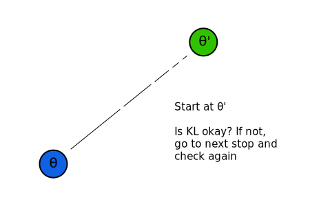

\(\color{red}{WIP}\)
We spent a lot of time improving the policy gradient to make it faster and more stable, but there's still one major issue with it. Since it's on-policy, there's a chance that we'll make a bad update that throws our agent into a horrible policy space from which it can never recover. Imagine an agent that's attempting to navigate a path up a mountain. If its policy gradient approximations are variable enough, it may just decide to jump off both a physical and metaphorical cliff. And if the agent is busy falling to its death, it can't learn to get to the top of the mountain anymore.
To fix this problem, we'll derive a theoretical algorithm that guarantees monotonic policy improvement. As we'll see later, this will end up being impractical to implement directly, so we'll instead approximate it and then use this approximation to mostly guarantee similar monotonic improvement.
Let's start off with a bit of notation. Let \( \eta(\pi) \doteq \mathbb{E}_{\tau\sim\pi} \Big[\displaystyle\sum_{t=0}^{\infty} \gamma^t r_t \Big] \). This is the expected return of a given policy, the usual RL objective that we want to maximize. Now we can express a pretty non-trivial identity that'll help us throughout the rest of our derivation: \[ \eta(\tilde{\pi}) = \eta(\pi) + \mathbb{E}_{\tau\sim\tilde{\pi}} \Big[ \displaystyle\sum_{t=0}^{\infty} \gamma^t A^\pi(s_t, a_t) \Big] \]
Hey kid you should write the proof here
This is in terms of timesteps, but it would be nice if we could express it without referring to just state and action. If we can do that, then it'll be easier to show that we can guarantee monotonic policy improvement. To do this, we'll define the discounted state probability \[ \begin{align*} p_\pi(s) &\doteq P(s_0 = s) + \gamma P(s_1 = s) + \gamma^2 P(s_2 = s) \;+\; ... \\ &= \sum_{t=0}^{\infty} \gamma^t P(s_t = s) \end{align*} \] Now we can rewrite our definition of \( \eta(\pi) \). Wwe'll write out our expectation using explicit sums over \(s\) and \(a\) and then move some terms around until we can substitute in our discounted state probability definition \[ \begin{align*} \eta(\tilde{\pi}) &= \eta(\pi) + \color{blue}{\sum_{t=0}^{\infty}} \sum_{s} \color{blue}{P(s_t = s | \tilde{\pi})} \sum_{a} \tilde{\pi}(a|s) \color{blue}{\gamma^t} A^\pi(s, a) \\ &= \eta(\pi) + \sum_{s} \color{blue}{\sum_{t=0}^{\infty} \gamma^t P(s_t = s | \tilde{\pi})} \sum_{a} \tilde{\pi}(a|s) A^\pi(s, a) \\ &= \eta(\pi) + \sum_{s} \color{blue}{p_\pi(s)} \sum_{a} \tilde{\pi}(a|s) A^\pi(s, a) \end{align*} \] For \(\eta(\tilde{\pi}) \geq \eta(\pi)\) to be true, the term \(\sum_{s} p_\pi(s) \sum_{a} \tilde{\pi}(a|s) A^\pi(s, a)\) must be positive. Since \( p_\pi(s) \geq 0 \; \forall s \) because of how probability works, that whole term will be positive if \( \sum_{a} \tilde{\pi}(a|s) A^\pi(s, a) = \mathbb{E}_{a}[A^\pi(s,a)] \) is positive \(\;\forall s\in\mathcal{S}\).
Thus if we iteratively maximize this expression and drive up the expected advantage, we should get monotonic policy improvement. Of course, in practice there will be some variability if we use stochastic function approximators, but this shouldn't hurt the implementation much.
So now we have an expression that, if maximized, can guarantee policy improvement. We still have one critical issue, though, which is that we can't actually calculate this value. Notice that the discounted state visitation probability is defined in terms of \(\tilde{\pi}\), which we don't know because \(\tilde{\pi}\) hasn't actually been used in the environment yet. We'll get around this by straight up changing \(p_\tilde{\pi}(s)\) to \(p_\pi(s)\). This allows us to approximate \(\eta(\tilde{\pi})\) using just environment samples obtained using our old policy, but it should be pretty obvious that this changes what our objective actually is.
Luckily for us, it was proven by (you should find the paper and put the proof in here) that this updated expression, although not equal to \(\eta(\tilde{\pi})\), does act as a lower bound of it given that \(\tilde{\pi}\) is calculated with a mixture \[ \tilde{\pi} = (1-\alpha)\pi + \alpha\pi' \\ \text{where} \; \pi' = \arg\max\limits_{\pi'} L_\pi(\pi') \] Given this mixture policy, the existing proof states that \[ \eta(\tilde{\pi}) \geq L_\pi(\tilde{\pi}) - \frac{2\varepsilon\gamma}{(1-\gamma)^2}\alpha^2, \\ \text{where} \; L_\pi(\tilde{\pi}) = \eta(\pi) + \sum_{s} p_\pi(s) \sum_{a} \tilde{\pi}(a|s) A^\pi(s, a) \\ \text{and} \; \varepsilon = \max_s | \mathbb{E}_{a\sim\pi'}[A^\pi(s, a)] | \] Given this proof, we know our approximation is a lower bound of the actual expected return. This tells us that if we maximize \(L_\pi(\tilde{\pi})\), we'll also end up maximizing the true expected return, which is what we want. So by maximizing the wrong thing, we end up maximizing the right thing. Kinda funky but hey, it works.
Up until this point, we've been covering theorems that the RL community has accepted for a while. But now we get to the real fun stuff, which is expanding our current proofs to apply to general stochastic policies instead of just mixture policies. We'll do this by replacing \(\alpha\) with a measure of how different \(\pi\) and \(\tilde{\pi}\) are and then updating \(\varepsilon\) appropriately.
In the Trust Region Policy Optimization (TRPO) paper (where this generalization of past proofs was published), total variation divergence is used. Total variation divergence is defined as \[ D_{TV}(p \,\Vert\, q) = \frac{1}{2}\sum_i | p_i - q_i | \] for discrete probability distributions. If we want this to work with continuous distributions instead, then we can just replace the sum with an integral. Now we'll define \[ D_{TV}^{max}(\pi, \tilde{\pi}) = \max_s D_{TV}(\pi(\cdot | s) \,\Vert\, \tilde{\pi}(\cdot | s)) \] What the TRPO paper proves is that if we let \(\alpha = D_{TV}^{max}(\pi, \tilde{\pi})\), then the following bound holds \[ \eta(\tilde{\pi}) \geq L_\pi(\tilde{\pi}) - \frac{4\varepsilon\gamma}{(1-\gamma)^2}\alpha^2, \\ \text{where} \; \varepsilon = \max_{s,a} | A^\pi(s,a) | \]
We then simplify this bound a bit by using KL divergence instead of total variation divergence. KL divergence tends to be pretty easy to work with and is a common choice when comparing probability distributions in machine learning settings, so this will end up being pretty helpful. It also has a nice relationship with total variation divergence: \(D_{TV}(p \,\Vert\, q)^2 = D_{KL}(p \,\Vert\, q)\). We can then define our objective as \[ \eta(\tilde{\pi}) \geq L_\pi(\tilde{\pi}) - C D_{KL}^{max}(\pi, \tilde{\pi}), \\ \text{where} \; C = \frac{4\varepsilon\gamma}{(1-\gamma)^2} \]
We'll take a break from our constant objective re-writing for now and write a theoretical algorithm that will guarantee monotonic policy improvement using the objective we just derived
Okay now back to the math. We have a nice theoretical algorithm. We derived a lower bound of the expected return \(\eta\) that we can maximize. The only issue is that this is impractical to implement as is. To calculate the objective once, we'd have to loop over every state and action pair. For a complicated environment like an Atari game, we'd have millions of discrete states. And for environments with continuous states we'd have to replace the sum with an integral and then the computation would be real bad.
So now we'll approximate our theoretical algorithm. We'll parameterize our policy in terms of \(\theta\) and then figure out how we can estimate our objective with a Monte Carlo method. Finally we'll see if we can get away with bigger policy changes than what the theory really says. The lower bounds we have are relatively loose in order to keep them simple, so we know we can change our policy more than what our theoretical algorithm tells us. But how much breathing room do we really have?
Let's tackle the first thing in that list: parameterizing our policy. We can simply rewrite our old expressions: \[ \eta(\theta) \doteq \eta(\pi_\theta) \\ L_\theta(\tilde{\theta}) \doteq L_{\pi_\theta}(\pi_\tilde{\theta}) \\ D_{KL}(\theta \,\Vert\, \tilde{\theta}) \doteq D_{KL}(\pi_\theta \,\Vert\, \pi_\tilde{\theta}) \] Now we wish to perform the following optimization procedure: \[ \theta_{new} \gets \arg\max_\tilde{\theta} [L_\theta(\tilde{\theta}) - C D_{KL}^{max}(\theta, \tilde{\theta})] \] If we optimize this directly, training will be very slow. As it turns out, we can train faster than what \(C\) tells us (because our lower bound was pretty pessimistic to begin with and in reality we have some breathing room). From here, there are two different strategies that work well. The first is determining a good way of balancing the importance of the KL divergence with the importance of our approximate objective. Following this route poses some challenges that we'll talk about in a bit, and leads to the Proximal Policy Optimization (PPO) algorithm class. The second way of performing this optimization without being constrained by \(C\) is to break up our procedure: we'll optimize our approximate objective subject to a hard constraint on the KL divergence. This second path will lead us to the TRPO algorithm, and we'll start with it.
From here we'll only have to make one more approximation to get to our final TRPO objective. Finding the max KL divergence is impractical, so we'll find the average KL divergence instead. Our split-up procedure is then the following: \[ \theta_{new} \gets \arg\max_\color{red}{\tilde{\theta}} \sum_s p_\color{blue}{\theta}(s) \sum_a \pi_\color{red}{\tilde{\theta}}(a|s) A_\color{blue} {\theta}(s,a) \\ \text{subject to} \; D_{KL}^{p_\color{blue}{\theta}}(\color{blue}{\theta}, \color{red}{\tilde{\theta}}) \leq \delta, \\ \text{where} \; D_{KL}^p (\theta_1, \theta_2) = \mathbb{E}_{s\sim p} \Big[D_{KL} \big( \pi_{\theta_1}(\cdot | s) \,\Vert\, \pi_{\theta_2} (\cdot | s) \big) \Big] \] Notice that our update to \(\theta\) doesn't contain a reference to \(\eta(\theta)\). That's because this is a constant that doesn't rely on \(\tilde{\theta}\), so we won't need it to find the optimal \(\tilde{\theta}\).
We'll now change our update rule to be based on expectations over states and actions instead of sums over all states and actions. This will allow us to simply sample from our policy and the environment to estimate it. Instead of just removing the sum over actions, we'll introduce an importance sampling ratio so that we can be more diverse in how we sample actions. \[ \begin{align*} \color{blue}{\sum_s p_\theta(s)} \sum_a \pi_\tilde{\theta}(a|s) A_\theta(s,a) &= \color{blue}{\mathbb{E}_{s\sim p_\theta}} \Big[ \color{red}{\sum_a \pi_\tilde{\theta}(a|s)} A_\theta(s,a) \Big] \\ &= \mathbb{E}_{s\sim p_\theta, \color{red}{a\sim q}} \Big[ \color{red}{\frac{\pi_\tilde{\theta}(a|s)}{q(a|s)}} A_\theta(s,a) \Big] \end{align*} \] where \(q\) is any distribution from which we sample actions. To keep things simple, we can just sample actions from our current policy, meaning \(q = \pi_\theta\).
I feel like I've rewritten our procedure a million times, but I'll do it once more because we won't change the theoretical version of it anymore. \[ \theta_{new} \gets \arg\max_\tilde{\theta} \mathbb{E}_{s\sim p_\theta, a\sim\pi_\theta} \Big[ \frac{\pi_\tilde{\theta}(a|s)}{\pi_\theta(a|s)} A_\theta(s,a) \Big] \\ \text{subject to} \; \mathbb{E}_{s\sim p_\theta} \Big[ D_{KL} \big( \pi_\theta(\cdot|s) \,\Vert\, \pi_\tilde{\theta}(\cdot|s) \big) \Big] \] This may look a bit complicated, but conceptually it's not bad at all. The main objective can be optimized with just an importance sampling version of the policy gradient, and we'll use the hard constraint on the KL divergence to ensure that our new policy isn't too different from our current one. It took a lot of math to get here, but our final update rule isn't that complicated by itself.
Ironically enough, though, things are about to get real complicated. To solve this constrained optimization problem, the TRPO paper suggests the following 2-step process: 1) Figure out the direction to move \(\theta\) in to maximize our objective, and 2) Figure out how far in that direction we can move without violating the KL divergence constraint. The authors of the paper accomplish this by using the conjugate gradient algorithm in conjunction with a line search along the computed update direction.
The above graphic shows what's really going on. We calculate the direction to update in and start a relatively far distance from where our parameters are at currently, at a spot that I'll call \(\theta'\). We then move a bit closer to our original parameters until the KL divergence constraint is met, moving at an exponential rate. Once we find parameters in the direction of \(\theta'\) that satisfy the KL divergence constraint, we use those parameters as our \(\theta_{new}\). We can also use this process as a sanity check to ensure that our update actually improves our objective, which we'll do as well. After all, we'll use a few approximations to make this whole process computationally efficient, and approximations can cause mistakes in our calculations that could trick us into making a bad update.
Put the actual math to do this here
That was a lot. TRPO isn't a fun algorithm to work with. It's messy and involves a lot of approximations. Luckily for us, though, there's a better option. Earlier I mentioned that there were two main strategies for optimizing the objective \(L_\theta(\tilde{\theta}) - C D_{KL}^{max}(\theta, \tilde{\theta})\). I then said that we were gonna pursue the second strategy and I just kinda made you go along with it. But now we'll try out that first strategy and we'll see that it gives us a simpler algorithm that in practice usually works just as good as, if not better than, TRPO.
Before I get into that, though, I want to explain why we didn't just start with the first strategy. If it's simpler and better, then why is TRPO even an algorithm that we bothered deriving? The main reason is that deriving PPO isn't as based in math as TRPO is. It works because of some tricks, basically, and it took about four months after the TRPO paper was published for researchers to determine a good series of techniques to use to make these tricks produce a viable algorithm.